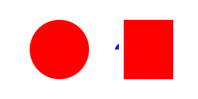
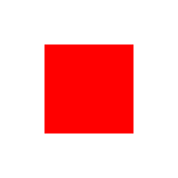
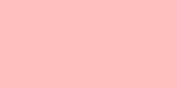
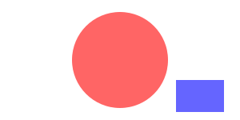
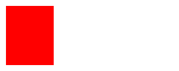
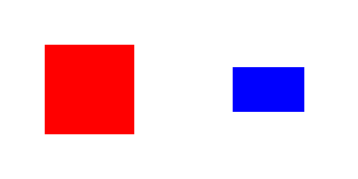
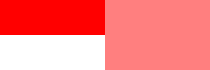
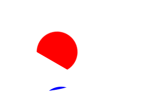
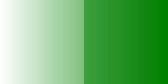
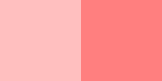

<mask> semanticsLuminance mask: black hides, gray 50% is half, white shows.
<svg xmlns="http://www.w3.org/2000/svg" width="300" height="100" viewBox="0 0 300 100">
<defs>
<mask id="m" maskUnits="userSpaceOnUse" x="0" y="0" width="300" height="100">
<rect x="0" y="0" width="100" height="100" fill="black"/>
<rect x="100" y="0" width="100" height="100" fill="rgb(128,128,128)"/>
<rect x="200" y="0" width="100" height="100" fill="white"/>
</mask>
</defs>
<rect x="0" y="0" width="300" height="100" fill="red" mask="url(#m)"/>
</svg>
Color luminance: red/green/blue differ by Rec.709 luma.
<svg xmlns="http://www.w3.org/2000/svg" width="300" height="100" viewBox="0 0 300 100">
<defs>
<mask id="m" maskUnits="userSpaceOnUse" x="0" y="0" width="300" height="100">
<rect x="0" y="0" width="100" height="100" fill="red"/>
<rect x="100" y="0" width="100" height="100" fill="lime"/>
<rect x="200" y="0" width="100" height="100" fill="blue"/>
</mask>
</defs>
<rect x="0" y="0" width="300" height="100" fill="white" mask="url(#m)"/>
</svg>
Mask content opacity scales coverage (0.25/0.5/0.75).
<svg xmlns="http://www.w3.org/2000/svg" width="300" height="100" viewBox="0 0 300 100">
<defs>
<mask id="m" maskUnits="userSpaceOnUse" x="0" y="0" width="300" height="100">
<rect x="0" y="0" width="100" height="100" fill="white" opacity="0.25"/>
<rect x="100" y="0" width="100" height="100" fill="white" opacity="0.5"/>
<rect x="200" y="0" width="100" height="100" fill="white" opacity="0.75"/>
</mask>
</defs>
<rect x="0" y="0" width="300" height="100" fill="red" mask="url(#m)"/>
</svg>
One userSpace mask reused by a transformed second object.
<svg xmlns="http://www.w3.org/2000/svg" width="400" height="200" viewBox="0 0 400 200">
<defs>
<mask id="m" maskUnits="userSpaceOnUse" x="0" y="0" width="400" height="200">
<circle cx="120" cy="100" r="60" fill="white"/>
<rect x="250" y="40" width="100" height="120" fill="white"/>
</mask>
</defs>
<!-- large object at origin -->
<rect x="0" y="0" width="400" height="200" fill="red" mask="url(#m)"/>
<!-- small object reusing the same mask, shifted and scaled via transform -->
<rect x="0" y="0" width="80" height="80" fill="blue"
transform="translate(200,60) scale(0.5)" mask="url(#m)"/>
</svg>

Outside the mask region stays fully transparent.
<svg xmlns="http://www.w3.org/2000/svg" width="200" height="200" viewBox="0 0 200 200">
<defs>
<mask id="m">
<rect x="50" y="50" width="100" height="100" fill="white"/>
</mask>
</defs>
<!-- object bigger than mask area: outside the mask must be fully transparent -->
<rect x="0" y="0" width="200" height="200" fill="red" mask="url(#m)"/>
</svg>

Group opacity 0.5 x mask alpha 0.5 = 0.25, applied once.
<svg xmlns="http://www.w3.org/2000/svg" width="200" height="100" viewBox="0 0 200 100">
<defs>
<mask id="m" maskUnits="userSpaceOnUse" x="0" y="0" width="200" height="100">
<rect x="0" y="0" width="200" height="100" fill="white" opacity="0.5"/>
</mask>
</defs>
<!-- group opacity 0.5 combined with mask alpha 0.5: final alpha must be 0.25 -->
<g opacity="0.5" mask="url(#m)">
<rect x="0" y="0" width="200" height="100" fill="red"/>
</g>
</svg>

A gradient mask gives a matching smooth alpha ramp.
<svg xmlns="http://www.w3.org/2000/svg" width="200" height="100" viewBox="0 0 200 100">
<defs>
<mask id="m" maskUnits="userSpaceOnUse" x="0" y="0" width="200" height="100">
<linearGradient id="g" x1="0" y1="0" x2="1" y2="0">
<stop offset="0" stop-color="black"/>
<stop offset="1" stop-color="white"/>
</linearGradient>
<rect x="0" y="0" width="200" height="100" fill="url(#g)"/>
</mask>
</defs>
<rect x="0" y="0" width="200" height="100" fill="red" mask="url(#m)"/>
</svg>
Nested masked groups; each mask and opacity stays distinct.
<svg xmlns="http://www.w3.org/2000/svg" width="300" height="150" viewBox="0 0 300 150">
<defs>
<mask id="outer" maskUnits="userSpaceOnUse" x="0" y="0" width="300" height="150">
<rect x="10" y="10" width="280" height="130" fill="white" opacity="0.8"/>
</mask>
<mask id="inner" maskUnits="userSpaceOnUse" x="0" y="0" width="300" height="150">
<circle cx="150" cy="75" r="60" fill="white"/>
</mask>
</defs>
<g mask="url(#outer)" opacity="0.75">
<g mask="url(#inner)">
<rect x="0" y="0" width="300" height="150" fill="red"/>
</g>
<rect x="220" y="100" width="60" height="40" fill="blue"/>
</g>
</svg>

Sibling elements reuse one mask without node mutation.
<svg xmlns="http://www.w3.org/2000/svg" width="300" height="120" viewBox="0 0 300 120">
<defs>
<mask id="m" maskUnits="userSpaceOnUse" x="0" y="0" width="300" height="120">
<rect x="10" y="10" width="80" height="100" fill="white"/>
</mask>
</defs>
<rect x="0" y="0" width="150" height="120" fill="red" mask="url(#m)"/>
<rect x="150" y="0" width="150" height="120" fill="blue" mask="url(#m)"/>
</svg>

objectBoundingBox mask re-fits each object of different size.
<svg xmlns="http://www.w3.org/2000/svg" width="400" height="200" viewBox="0 0 400 200">
<defs>
<!-- objectBoundingBox: same mask reused by objects of different
size and position; each must get its own centered 50% region -->
<mask id="m" maskContentUnits="objectBoundingBox">
<rect x="0.25" y="0.25" width="0.5" height="0.5" fill="white"/>
</mask>
</defs>
<rect x="0" y="0" width="200" height="200" fill="red" mask="url(#m)"/>
<rect x="220" y="50" width="160" height="100" fill="blue" mask="url(#m)"/>
</svg>

mask-type alpha vs luminance produce different results.
<svg xmlns="http://www.w3.org/2000/svg" width="300" height="100" viewBox="0 0 300 100">
<defs>
<!-- alpha mask: colors are ignored, only alpha matters -->
<mask id="a" mask-type="alpha" maskUnits="userSpaceOnUse"
x="0" y="0" width="300" height="100">
<rect x="0" y="0" width="150" height="100" fill="black" opacity="1"/>
<rect x="150" y="0" width="150" height="100" fill="white" opacity="0.5"/>
</mask>
<!-- luminance mask with the same geometry but different colors -->
<mask id="l" mask-type="luminance" maskUnits="userSpaceOnUse"
x="0" y="0" width="300" height="100">
<rect x="0" y="0" width="150" height="100" fill="black" opacity="1"/>
<rect x="150" y="0" width="150" height="100" fill="white" opacity="0.5"/>
</mask>
</defs>
<rect x="0" y="0" width="300" height="50" fill="red" mask="url(#a)"/>
<rect x="0" y="50" width="300" height="50" fill="red" mask="url(#l)"/>
</svg>

Rotated/translated non-square objects, shared mask.
<svg xmlns="http://www.w3.org/2000/svg" width="300" height="200" viewBox="0 0 300 200">
<defs>
<mask id="m" maskUnits="userSpaceOnUse" x="0" y="0" width="300" height="200">
<circle cx="60" cy="60" r="40" fill="white"/>
</mask>
</defs>
<!-- rotated, translated, non-square object reusing a userSpace mask -->
<rect x="0" y="0" width="120" height="80" fill="red"
transform="translate(90,20) rotate(30)" mask="url(#m)"/>
<!-- second object with a different transform and aspect ratio -->
<ellipse cx="0" cy="0" rx="100" ry="30" fill="blue"
transform="translate(60,150)" mask="url(#m)"/>
</svg>

color-interpolation=linearRGB changes the gray coverage.
<svg xmlns="http://www.w3.org/2000/svg" width="200" height="100" viewBox="0 0 200 100">
<defs>
<mask id="m" maskUnits="userSpaceOnUse" x="0" y="0" width="200" height="100"
color-interpolation="linearRGB">
<rect x="0" y="0" width="100" height="100" fill="rgb(128,128,128)"/>
<rect x="100" y="0" width="100" height="100" fill="rgb(128,128,128)"
color-interpolation="sRGB"/>
</mask>
</defs>
<rect x="0" y="0" width="200" height="100" fill="red" mask="url(#m)"/>
</svg>
Gradient plus a translucent group inside the mask.
<svg xmlns="http://www.w3.org/2000/svg" width="240" height="120" viewBox="0 0 240 120">
<defs>
<linearGradient id="fade" x1="0" y1="0" x2="1" y2="0">
<stop offset="0" stop-color="black"/>
<stop offset="0.5" stop-color="rgb(128,128,128)"/>
<stop offset="1" stop-color="white"/>
</linearGradient>
<mask id="gm" maskUnits="userSpaceOnUse" x="0" y="0" width="240" height="120">
<rect x="0" y="0" width="240" height="120" fill="url(#fade)"/>
<!-- a semi-transparent group inside the mask: alpha multiplies luma -->
<g opacity="0.5">
<rect x="120" y="0" width="120" height="120" fill="white"/>
</g>
</mask>
</defs>
<rect x="0" y="0" width="240" height="120" fill="green" mask="url(#gm)"/>
</svg>

Mask content referenced through <use>.
<svg xmlns="http://www.w3.org/2000/svg" width="200" height="100" viewBox="0 0 200 100">
<defs>
<rect id="slot" x="30" y="20" width="140" height="60" fill="white"/>
<mask id="um" maskUnits="userSpaceOnUse" x="0" y="0" width="200" height="100">
<use href="#slot"/>
</mask>
</defs>
<rect x="0" y="0" width="200" height="100" fill="purple" mask="url(#um)"/>
</svg>
Leaf opacity and mask alpha each applied exactly once.
<svg xmlns="http://www.w3.org/2000/svg" width="200" height="100" viewBox="0 0 200 100">
<defs>
<mask id="m" maskUnits="userSpaceOnUse" x="0" y="0" width="200" height="100">
<rect x="0" y="0" width="200" height="100" fill="white" opacity="0.5"/>
</mask>
</defs>
<!-- leaf element with its own opacity AND a mask alpha: result 0.5*0.5 -->
<rect x="0" y="0" width="100" height="100" fill="red"
opacity="0.5" mask="url(#m)"/>
<!-- control: mask only -->
<rect x="100" y="0" width="100" height="100" fill="red" mask="url(#m)"/>
</svg>
